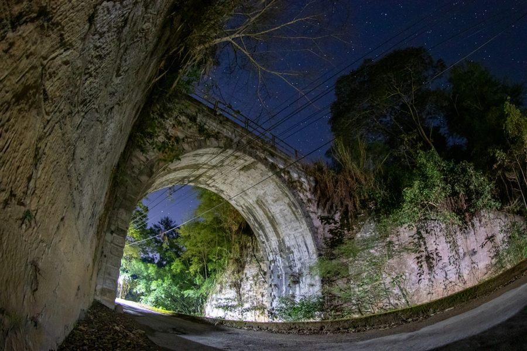
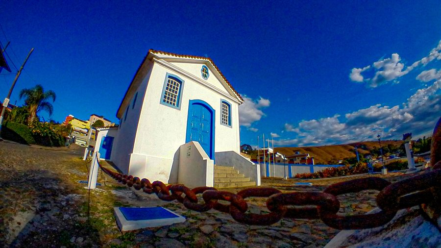
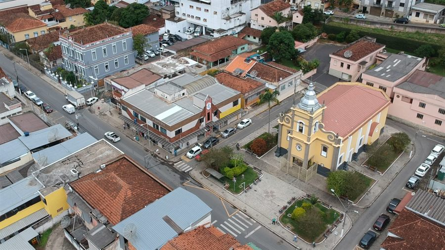

01 O que fazer
Ver todos os atrativos
Tem de tudo em Matias Barbosa

Igreja Matriz N. Sra. da Conceição
Centenária, no coração do Centro.

Ponte da Liberdade
Arco de pedra da era ferroviária.

Santuário do Caaró
Céu estrelado e silêncio na roça.

Capela do Rosário
Patrimônio e fé em azul e branco.
Mirante da Penha
A cidade inteira aos seus pés.

Centro & Memória
Um passeio pela história da cidade.


04 Acontece na cidade
Agenda completa
O que está rolando na cidade

05 Agenda & Vídeos
Ver agenda completa
Fique por dentro da programação
Julho de 2026
12
Jul
2026
18:00
Festa popular
Festa do Padroeiro São Bento
Missa, quermesse e música na comunidade rural do Piemonte.
Piemonte
19
Jul
2026
18:00
Festa popular
Festa do Padroeiro São Joaquim
Tradicional festejo com barraquinhas, leilão e apresentação de raiz.
São Joaquim
26
Jul
2026
09:00
Cultura
Feira de Artesanato & Sabores
Produtores locais, gastronomia mineira e música ao vivo na Praça Matriz.
Centro